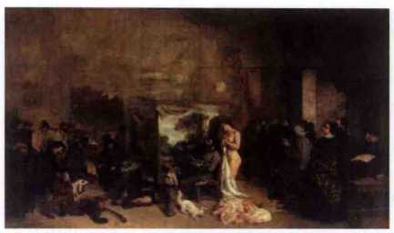

1.17. 绘画的发展和个性的解放¶
艺术没有科学那种积累的效果，即21世纪的科学水平一定比17世纪的高。人类的绘画史上有过两个高峰：文艺复兴时期的意大利和19世纪的法国。
艺术（包括表演艺术和视觉艺术）都是和社会大环境以及艺术家的个人经历分不开的。他们的作品都是时代的反映，而不是自己闭门造车的结果。
中国人在油画上只用几十年的时间便走过了欧美人用了两个世纪所走过的路，这就如同中国在工业发展上，用30年的时间走完了欧美两个世纪的历程一样。
世界上有两种艺术作品几乎为所有人喜爱，一种是青花瓷，另一种就是印象派绘画。
| 流派 | 时间 | 代表作 |
|---|---|---|
| 新古典主义 | 18世纪末—19世纪初 | 达维特（《拿破仑的加冕礼》、《马拉之死》、《荷拉斯兄弟的誓言》） |
| 安格尔（《泉》） | ||
| 浪漫主义 | 19世纪上半叶— | 席里柯（《梅杜莎之筏》） |
| 19世纪中期 | 德拉克罗瓦（《自由引导人民》） | |
| 现实主义 | 19世纪中期— | 库尔贝（《画室》） |
| 19世纪下半 | 叶米勒（《拾穗者》） | |
| 印象派 | 19世纪下半叶— | 莫奈（《印象 ·日出》、《睡莲》） |
| 20世纪初 | 马奈（《草地上的午餐》） | |
| 雷诺阿（《煎饼磨坊的舞会》） | ||
| 梵高（《向日葵》、《自画像》、《星空》） | ||
| 现代派 | 20世纪初 | 毕加索（《阿维尼翁的少女》、《格尔尼卡》） |
注解
- 达维特绘画风格的精髓是讲究布局的平衡，画面线条的清晰，以及色彩鲜艳，以刻画从古代到现实生活中的英雄人物为主，被誉为古典主义的旗帜。安格尔则以描绘女性阴柔的美著称，被誉为古典主义的捍卫者。
- 古典主义诞生在18世纪末到19世纪初的法国，有着历史的必然性，因为那时社会需要这样的艺术。类似的情况还发生在1949年后的中国。
- 相比注重素描线条和准确性、强调理性和秩序的古典主义，浪漫主义更注重色彩和个人表现。席里柯生活的时代是从古典主义向浪漫主义过渡的时代，《梅杜莎之筏》的问世，开辟了浪漫主义的先河。德拉克罗瓦用色彩掩盖了古典主义强调的线条，用动态感很强的颜色对比，对抗古典主义在色彩上讲究的静态和谐。
- 现实主义绘画的题材更贴近生活。库尔贝坚决反对传统的风俗观念，他主张艺术应以现实为依据，反对粉饰生活。米勒则进一步把绘画的主题从城市拓展到农村。
- 印象派在题材上大多是对现实生活的写实描绘，但是他们对现实生活进行了特殊的艺术再现。从印象派开始，绘画中主观的元素越来越多。他们的绘画都同样具有善于使用光和色的特点，但是他们创作的主题和风格迥异，每个人的绘画都是他们所生活的社会的再现。
- 毕加索的一生，浓缩了从古典主义开始到现代绘画艺术的变化过程，追踪他一个人绘画风格的变化，在某种程度上便能看出过去二百多年以来绘画的发展。他对绘画的发展进行的大胆尝试，而这种尝试的核心是将艺术抽象化。
- 在创作风格上，夏加尔独来独往，无门无派，不仅前无古人，而且后无来者，一些艺术画派试图将夏加尔纳入其中，但是都被夏加尔拒绝了。夏加尔之后，就再无这种风格的画家了。
{kind=link}
{kind=link}
{kind=link}
{kind=link}

古典主义绘画，安格尔的代表作《泉》（收藏于巴黎奧赛博物馆）
{kind=link}
{kind=link}
{kind=link}

{kind=link}
现实主义绘画，库尔贝的经典之作《画室》（收藏于奥赛博物馆）
{kind=link}

印象派的代表作《印象·日出》（收藏于莫奈博物馆）
{kind=link}
{kind=link}
{kind=link}
{kind=link}

夏加尔的代表作——巴黎歌剧院天顶画。
{kind=link}
{kind=link}